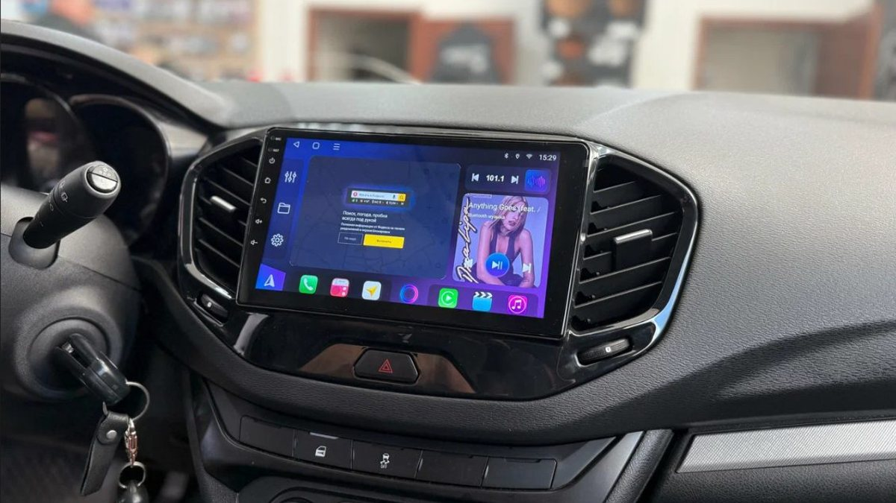

Вечер, Октябрьский мост стоит, вы стоите вместе с ним. Навигатор на телефоне, прилепленном к стеклу, показывает объезд, но экран крошечный, телефон съезжает на каждой кочке, а штатная магнитола с маленьким дисплеем умеет только радио и флешку. В такой пробке и рождается мысль: пора ставить нормальный большой экран.
Установка магнитолы в Ярославле на Android вместо штатной – задача решаемая почти для любой машины, но успех зависит не от самого экрана, а от трёх вещей вокруг него: рамки, проводки и того, сохранятся ли штатные функции. Ниже разбираем, из чего состоит комплект, где обычно ошибаются и что проверить до покупки, чтобы не остаться без кнопок на руле или без климата на экране.

Штатная или универсальная: в чём разница
Android-магнитолы бывают двух типов, и это первое, с чем стоит определиться.
Универсальные 2DIN и 1DIN. Магнитола стандартного размера встаёт в стандартный проём. Подходит машинам, у которых такой проём есть с завода. Плюс – большой выбор, минус – экран ограничен размером проёма, а на многих современных машинах стандартного проёма просто нет.
Штатные под конкретную модель. Большой экран, обычно 9 или 10 дюймов, плюс рамка, повторяющая форму панели вашей машины, и комплект проводов под её разъёмы. Установка штатной магнитолы выглядит как заводская: ничего не торчит, не болтается, кнопки и подсветка на своих местах.
Для большинства машин последних лет выбор фактически один – штатный вариант. Именно поэтому «магнитолу» правильнее понимать как комплект, а не как один экран.
Из чего состоит комплект
- Головное устройство. Сам экран с процессором, памятью и встроенным усилителем.
- Переходная рамка для магнитолы. Пластиковая рамка, которая закрывает зазоры между экраном и панелью. Рамку делают под конкретную модель и год, потому что форма панели после рестайлинга часто меняется.
- Переходник проводки. Кабель, который с одной стороны вставляется в заводской разъём машины, а с другой в магнитолу. Хороший переходник позволяет поставить магнитолу без единого разреза штатной проводки.
- CAN-декодер. Небольшой блок, который переводит язык машины на язык магнитолы. Через него работают кнопки руля, показ открытых дверей, климата, датчиков парковки. Есть машины, где кнопки руля работают по резистивной схеме и декодер не нужен, а есть, где без него не заработает ничего, кроме звука.
- Переходники антенны и камеры. Штатный разъём антенны радио и штатной камеры часто не совпадает с разъёмом магнитолы.
- Выносной микрофон, GPS-антенна, удлинитель USB. Мелочь, которую нужно куда-то спрятать и вывести так, чтобы было удобно.
Когда в магазине предлагают «экран за такие деньги» без рамки, проводки и декодера, это половина покупки. Остальное всплывёт в момент установки.
Что может потеряться при замене штатной магнитолы
Это главный вопрос, который стоит задать до покупки. На некоторых машинах штатная магнитола не только играет музыку.
- Климат на экране. У ряда моделей настройки климата выведены на штатный дисплей. Если новый комплект это не поддерживает, вы останетесь без индикации или вовсе без части управления.
- Штатный усилитель. В машинах с заводской «премиальной» акустикой магнитола отдаёт сигнал на отдельный усилитель. Без нужного переходника звука не будет или он станет тише.
- Штатная камера и парктроники. Камера может работать через магнитолу. Её нужно подключить и проверить, что картинка не зеркальная и разметка на месте.
- Настройки машины. Часть автомобилей прячет в меню магнитолы настройки света, замков, предупреждений.
Если хоть что-то из этого есть в вашей машине, комплект подбирают с учётом этого. Иначе экономия на «простом» варианте обернётся потерей функций, которые раньше работали.

Установка андроид магнитолы: как выглядит работа
Последовательность у грамотной установки примерно такая.
1. Аккуратно снимают штатную магнитолу и панели вокруг неё. На многих машинах это клипсы, которые на морозе ломаются легко, поэтому зимой их снимают тёплыми и пластиковым инструментом.
2. Собирают новую магнитолу в рамку и подключают всё на столе: переходник, декодер, антенну, камеру, микрофон.
3. Подключают к машине, но не собирают панель. Проверяют всё по списку: звук на всех динамиках, радио, кнопки руля, камера на задней передаче, подсветка, климат если он есть, Bluetooth и звонки.
4. Только после этого прячут лишние провода, крепят, чтобы ничего не стучало, и собирают панель.
Третий шаг – самый важный. Если его пропустить, неработающие кнопки руля выясняются уже после сборки, и всё приходится разбирать заново.
Звук после замены: почему бывает тише или хуже
Многие ждут, что с новым экраном музыка тоже станет лучше, а получают звук «как было» или даже площе. Причина в том, что встроенный усилитель Android-магнитолы по мощности обычно примерно такой же, как в штатной, а динамики в дверях остались заводскими. Экран на звук сам по себе не влияет.
Зато у Android-магнитолы обычно есть то, чего не было у штатной: многополосный эквалайзер, баланс по каждому каналу, а у многих моделей и задержки, которые собирают звук перед водителем. Если потратить время на настройку, разница слышна даже на штатной акустике. А если хочется громче и чище, следующий шаг – внешний усилитель или замена динамиков, и под это стоит сразу выбрать магнитолу с нужными выходами.
Ещё одна деталь – подсветка. Экран должен приглушаться вечером вместе с приборной панелью, иначе в тёмном салоне он слепит. Для этого подключают провод подсветки или берут сигнал через декодер, и это тоже проверяют до сборки.
Частые ошибки
- Купить экран без проверки рамки под свой год выпуска. Рамка дорестайлинга на рестайлинг не встаёт, и это выясняется в момент установки.
- Резать штатную проводку. Когда переходника нет, провода скручивают «по цветам». Через год скрутки окисляются, появляются помехи, а вернуть штатную магнитолу при продаже машины уже сложно.
- Подключить питание неправильно. Если постоянный плюс и плюс от замка зажигания перепутаны, магнитола не выключается полностью и за пару холодных ночей сажает аккумулятор. Зимой это особенно неприятно.
- Забыть про микрофон. Встроенный в корпус микрофон плохо слышит голос за шумом дороги. Выносной на стойке или у плафона работает заметно лучше.
- Ставить GPS-антенну под металлом. Под панелью, закрытой железом, навигатор теряет спутники и показывает вас на соседней улице.
Автомагнитола купить в Ярославле или заказать в интернете
Заказать экран из интернета можно, вопрос в том, кто отвечает за совместимость. Если рамка, переходник или декодер не подошли, вы вернёте их сами, а машина всё это время стоит с разобранной панелью. Когда комплект подбирают под машину на месте, проверить его можно до покупки, а если что-то не встало, этим занимается тот, кто подбирал.
Автомагнитолы в Ярославле продаются и в магазинах, и у установщиков. Разница в том, что установщик подбирает комплект под конкретную машину и сразу знает, какой нужен декодер и какие сюрпризы бывают с вашей моделью.
Что спросить до установки
- Какая рамка и под какой год выпуска?
- Нужен ли CAN-декодер для кнопок руля и климата?
- Будет ли подключение без разрезания штатной проводки?
- Сохранятся ли штатная камера, климат на экране и штатный усилитель, если они есть?
- Куда выведут микрофон, USB и GPS-антенну?
Частые вопросы
Сколько стоит поставить такую магнитолу? Цену называют после того, как понятна машина. Она складывается из самого экрана (память, процессор, размер), рамки, переходника, декодера, камеры, если её нужно добавить, и сложности разборки панели. На одной машине это стандартные разъёмы, на другой – дополнительные адаптеры для климата или усилителя.
Сохранятся ли кнопки на руле? Почти всегда да, если в комплекте есть правильный CAN-декодер или машина работает по резистивной схеме. Это проверяют до сборки панели.
Можно ли потом вернуть штатную магнитолу? Да, если подключение было через переходник без разрезания проводов. Поэтому штатную магнитолу стоит сохранить, она пригодится при продаже машины.
Как подобрать переходную рамку для магнитолы? По марке, модели, году выпуска и по тому, есть ли в машине климат-контроль или обычная печка: под разные комплектации рамки бывают разные. Рамку подбирают вместе с экраном нужного размера.
Будет ли работать камера заднего вида? Штатную подключают через переходник, неоригинальную – напрямую. В обоих случаях после подключения проверяют, что картинка появляется сразу при включении задней передачи.
Где сделать установку магнитолы в Ярославле
Студия «Звук на Волге», Ярославль, проспект Октября, 82б. Пн–пт 8:30–20:00, сб–вс 10:00–19:00. Подберём Android-магнитолу под вашу машину, установим и настроим: навигатор, камеру заднего вида, регистратор. В магазине студии есть и магнитолы Teyes, на всё оборудование действует гарантия производителя, а на работы – гарантия студии. Стоимость посчитаем по вашей машине.
Подробнее и запись: установка Android-магнитол в Ярославле. Телефон +7 902 220-75-55, сообщения в ВК: vk.me/avtostil_yaroslavl.
Раньше нас знали как «Автостиль». Мы обновились и, раз занимаемся звуком в Ярославле, назвались «Звук на Волге». Адрес тот же.